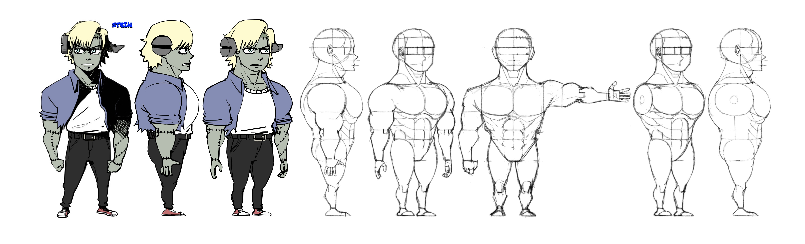
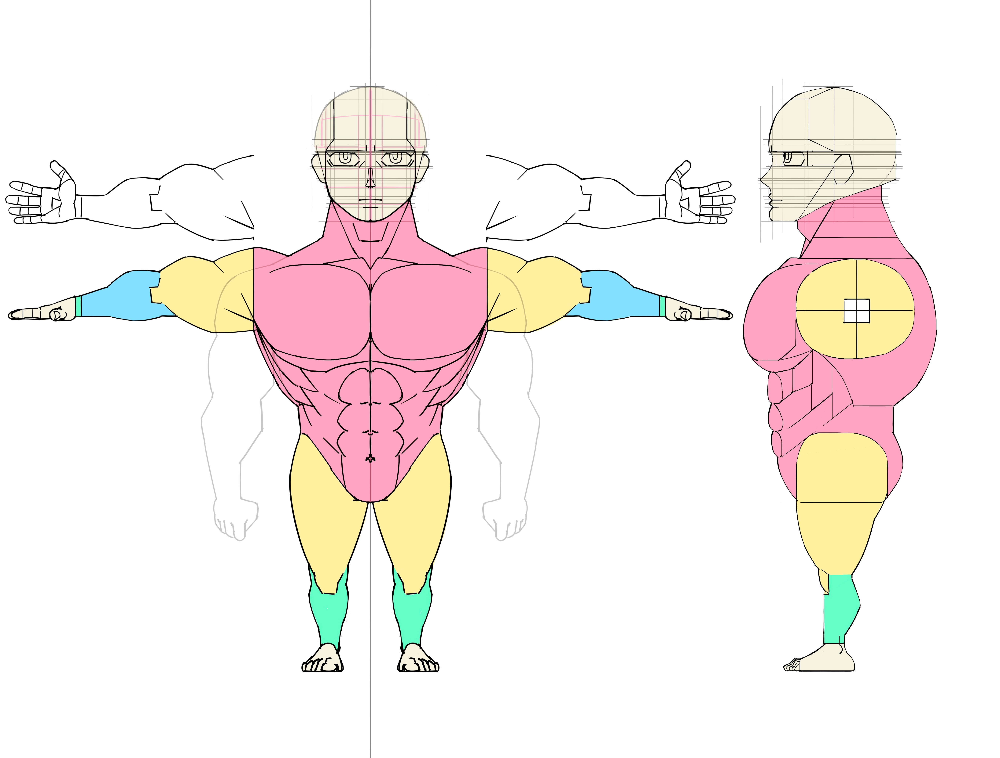
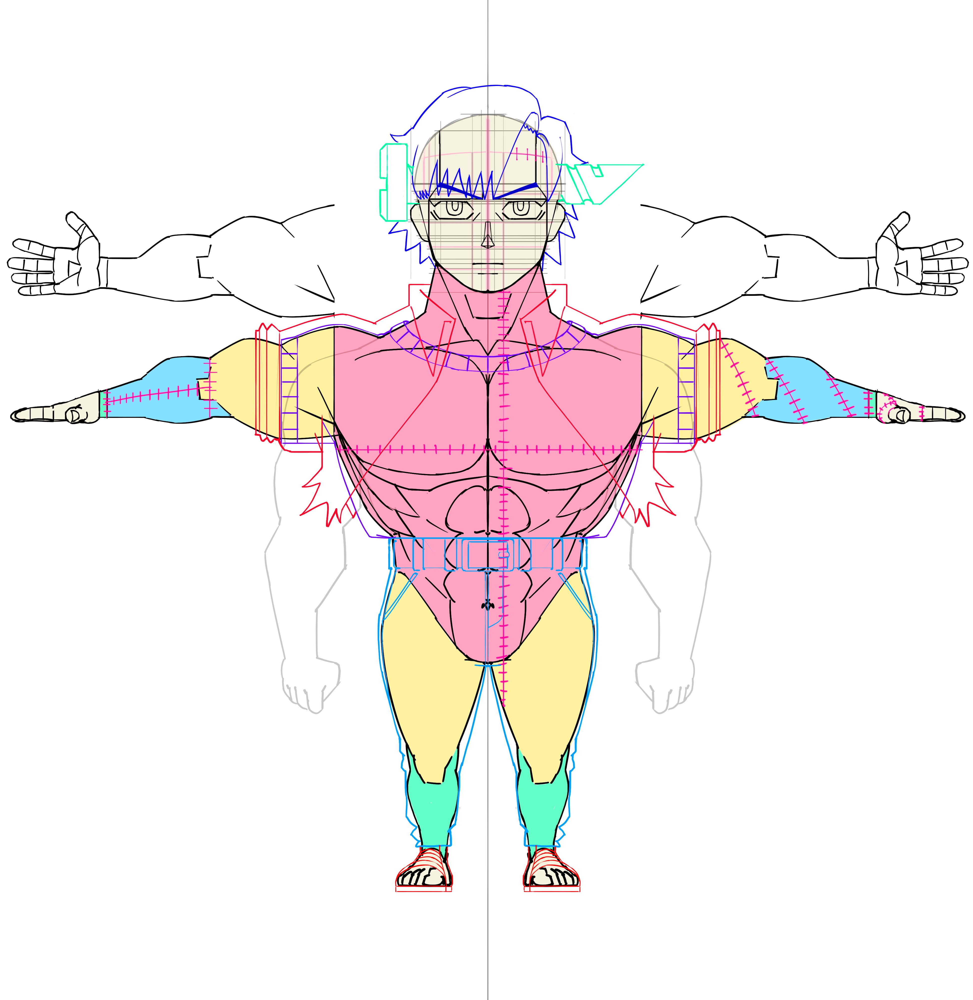

Victhor Von Frankenstein

Morga Morningstar is a stylized goblin berserker designed for a fantasy action game environment. The character explores exaggerated proportions and strong silhouette readability to create a compact yet powerful playable character.
The design focuses on personality-driven visual language, combining ferocity and mischievous charm. Her oversized bone mace acts as a key visual anchor, reinforcing her brutal combat style while adding organic shape contrast to her compact body structure.


